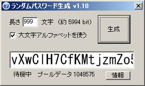

Pass.exe（ランダムなパスワード用文字列生成ツール）ｖ1.00
とつげき東北 TOP
動作環境：
WINDOWS95・WINDOWS98・WINDOWSNT・WINDOWSMe・WINDOWS2000・WINDOWSXp
開発環境：
Borland C++ Builder Professional Version5.0

紹介
職場などで頻繁にパスワードを生成する機会がある場合、パスワードの生成に意外と悩むもの。
そこで、ランダムなパスワード文字列を生成するだけのツール。
「ランダム」はとつげき東北開発の「hdrand.c」ルーチンによって得られるハード的乱数を、SHA-512一方向ハッシュ関数にかけて得られるものである。
（なので、「運が悪い」と数字のみの連続になったりするが、そこは適宜ご判断を）
ちなみに職場の上司（Ｎ氏）に強く希望されて作成。
おい、このクズソフト、国民のためになるのか？
このソフトの実行には、同梱されている以下のファイルが必要です。
UNLHA32.dll（Micco氏）
VNCrypt.DLL（とつげき東北暗号関係DLL）
使い方
ボタンを押す。
「使い方がわかりません」とかメールしてきたら、倒す。
付属のDLLは実行ファイルと同じフォルダ上において使ってください。
なお、文字列の長さに対する強度は概算です。
大・小文字及び数字の場合、１文字あたりおよそ6bit（64パターン）だとみなし、小文字及び数字の場合、１文字あたりおよそ5bit（32パターン）だとしています。
ダウンロード
Passダウンロード（lzh圧縮）
アルゴリズムの安全性について
このプログラムを用いて作ったランダムパスワードに、万一、不具合等があった場合でも、とつげき東北は一切責任を負いません。
可能であれば、自分が思いついたいくつかのランダムな数字等と組み合わせて使う（または自分が思いついた数字列によって、このソフトからの出力結果を変換して使う）とより安全です。
「hdrand.c」は、とつげき東北が開発した、乱数（Pseud
Random Number ではなく、Random Number）生成ルーチンです。
ストレージデバイスへのファイル書き込みにかかる時間を、高分解能パフォーマンスカウンタで測定し、かかった時間の計測結果の各ビットに、100回あたり十分な変化がある場合に、そのビットを乱数であるとみなして乱数ビットを生成しています。これによって得られた「乱数列」のランダム性については、乱数の統計検定ソフトDIEHARDで検証されていますので、詳しくは「hdrand.c」をご覧ください。
ここで得られた乱数ビット列を、一方向性関数SHA-512によって変換した結果を、「Pass」では乱数として用いています（そこで得られた「乱数」から、適宜、パスワードの文字列生成に必要な分のエントロピーを得ています）。
したがって、DIEHARDによる検定によってhdrandが「一定の、推測がたやすい」出力をしないことを信頼し、かつ、SHA-512の「計算が不可逆」であるという性質を信頼する限り、少なくともSHA-512の持つ安全性と同等の安全性を確保することができます。
ただしhdrandの出力については、特定の環境下（とつげき東北のマシン）での出力結果をDIEHARDで検定したものですので、より高い安全性を考える場合は、使用者の手によるアナログなエントロピーを加えることを推奨します。
バージョン情報
1.00 初公開版
著作権および利用規約
必ずお読み下さい